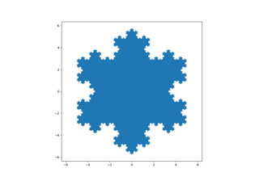

matplotlib.pyplot.axis¶
-
matplotlib.pyplot.axis(*args, emit=True, **kwargs)[source]¶ Convenience method to get or set some axis properties.
Call signatures:
xmin, xmax, ymin, ymax = axis() xmin, xmax, ymin, ymax = axis([xmin, xmax, ymin, ymax]) xmin, xmax, ymin, ymax = axis(option) xmin, xmax, ymin, ymax = axis(**kwargs)
Parameters: - xmin, xmax, ymin, ymaxfloat, optional
The axis limits to be set. This can also be achieved using
ax.set(xlim=(xmin, xmax), ylim=(ymin, ymax))
- optionbool or str
If a bool, turns axis lines and labels on or off. If a string, possible values are:
Value Description 'on' Turn on axis lines and labels. Same as True.'off' Turn off axis lines and labels. Same as False.'equal' Set equal scaling (i.e., make circles circular) by changing axis limits. This is the same as ax.set_aspect('equal', adjustable='datalim'). Explicit data limits may not be respected in this case.'scaled' Set equal scaling (i.e., make circles circular) by changing dimensions of the plot box. This is the same as ax.set_aspect('equal', adjustable='box', anchor='C'). Additionally, further autoscaling will be disabled.'tight' Set limits just large enough to show all data, then disable further autoscaling. 'auto' Automatic scaling (fill plot box with data). 'image' 'scaled' with axis limits equal to data limits. 'square' Square plot; similar to 'scaled', but initially forcing xmax-xmin == ymax-ymin.- emitbool, default: True
Whether observers are notified of the axis limit change. This option is passed on to
set_xlimandset_ylim.
Returns: - xmin, xmax, ymin, ymaxfloat
The axis limits.
Examples using matplotlib.pyplot.axis¶
